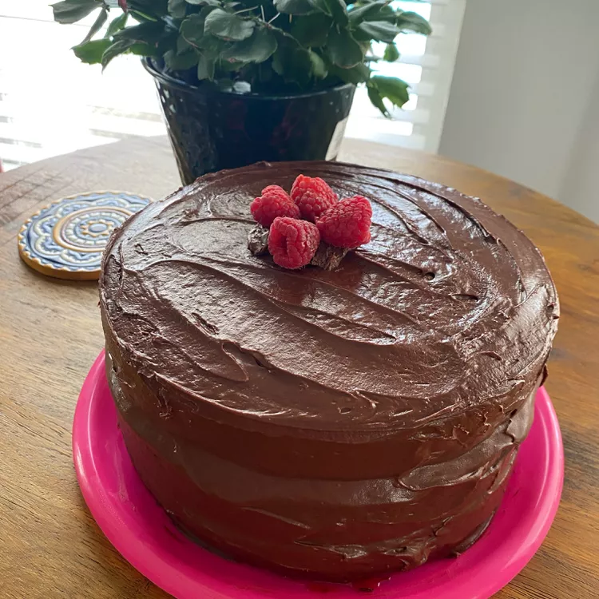

Chocolate Layer Cake

Description
This moist chocolate cake is a rich, homemade dessert made with cocoa, brewed coffee, and sour
cream for a soft and tender texture.
It makes a simple but indulgent cake that works well for birthdays, celebrations, or whenever
you want a classic chocolate dessert.
Ingredients
- 2 teaspoons unsweetened cocoa powder
- 2 cups cake flour
- ¾ cup unsweetened cocoa powder
- 2 teaspoons baking soda
- 1 teaspoon baking powder
- 1 teaspoon salt
- 2 cups white sugar
- 1 cup canola oil
- 2 eggs
- 1 cup 2% milk
- 1 cup brewed coffee
- 1 tablespoon vanilla extract
- 1 cup sour cream
Steps
-
Preheat oven to 325 degrees F (165 degrees C). Grease a 9x13-inch baking pan; dust pan with
2 teaspoons cocoa powder or as needed.
-
Whisk cake flour, 3/4 cup cocoa, baking soda, baking powder, and salt in a bowl. Mix sugar
and canola oil in a mixing bowl and beat with an electric mixer on medium speed until
combined. Beat eggs into sugar and oil, one at a time, blending in the first egg before
adding the second. Gradually beat milk, coffee, and vanilla extract into sugar mixture until
smooth.
-
Reduce mixer speed to low and beat flour mixture into wet ingredients. Stir sour cream into
batter. Pour into prepared baking pan.
-
Bake in the preheated oven until a toothpick inserted into the center of the cake comes out
clean or with moist crumbs, about 40 minutes.
Return Home